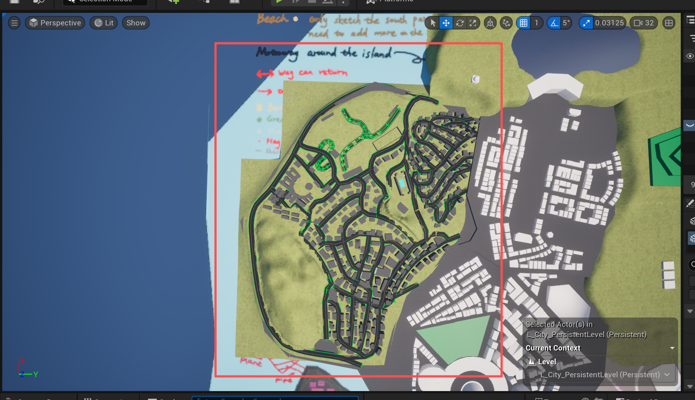
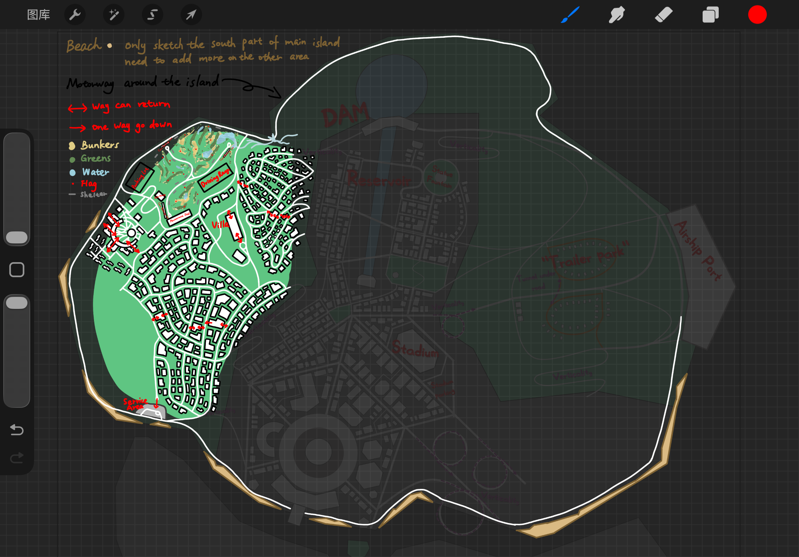

Round the Bend
Junior Game Designer Intern · Level Design / Environment Support
A four-month studio placement translating environment references into top-down plans and iterable UE5 blockouts for assigned areas of a collaborative world.
- Visual research and top-down spatial planning
- Blockout, basic landscape shaping and road placement
- Shared sub-levels, GitHub workflow and playtest iteration